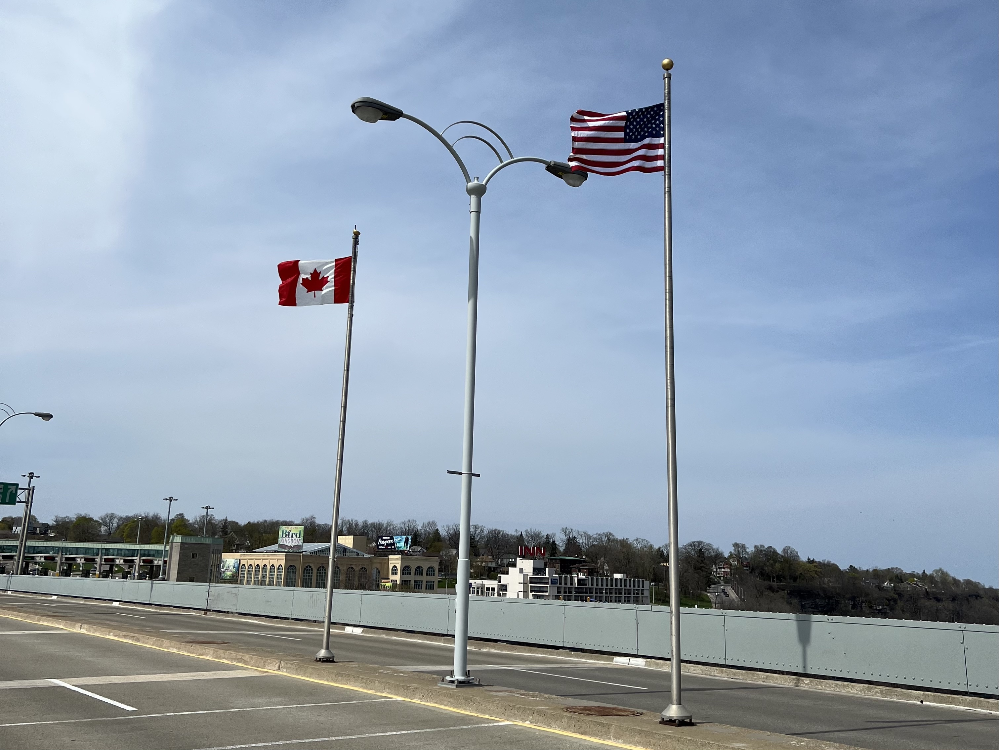
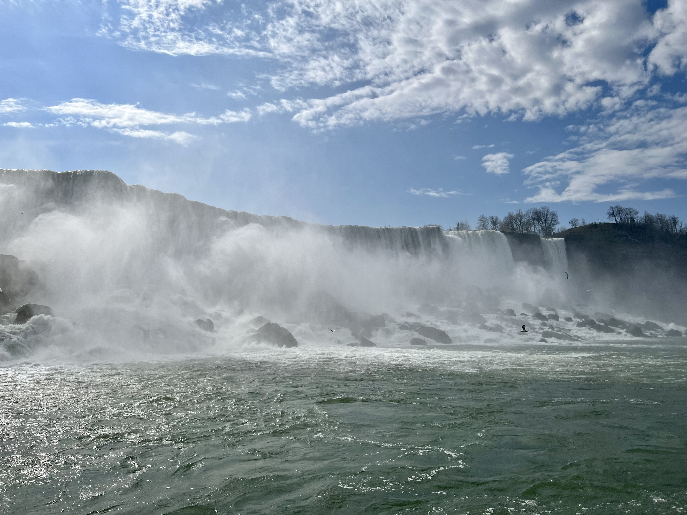

【美國加拿大】尼加拉瀑布 Niagara Falls 交通、景點介紹！
尼加拉瀑布背景介紹
尼加拉瀑布 Niagara Falls （注意是"尼加拉瀑布"，不是尼加拉瓜瀑布哦，沒有瓜！，尼加拉瓜是一個中美洲國家xD）。
尼加拉瀑布位於北美大湖區，是美加邊境的一系列壯麗瀑布，包括美國紐約州的美國瀑布 American Falls、新娘面紗瀑布 Bridal Veil Falls和加拿大安大略省的馬蹄瀑布 Horseshoe Falls。
尼加拉瀑布是全球最著名的自然奇觀之一，以其驚人的高度和獨特性聞名全球。美國瀑布高50公尺、馬蹄瀑布高51公尺他們之間的瀑布可謂壯觀。
遊客可以搭乘遊船觀賞，感受其巨大的水量及水霧，也可以在周圍的景點、公園中了解尼加拉瀑布的生態。

因為瀑布大部分範圍都在美國境內，所以極力推薦要去對岸的加拿大看會比較壯觀哦！行人和汽車都可以走彩虹橋往返兩國，非常方便，拜託大家一定要到加拿大這側看！
簽證、入境規定（2023年）
兩邊都會有海關人員查驗護照，並問幾個簡單的問題，像是為何要入境、待多久等等，不緊張。
從美國前往加拿大：有事先申請ESTA就不用另外申請其他文件，帶著快樂的心去玩就好！
從加拿大前往美國：從加拿大出發的話要記得事先申請美國的ESTA哦！
一日遊行程（紐約市出發 當天來回）
紐約甘迺迪國際機場(JFK) → 水牛城尼加拉國際機場(BUF) → 彩虹橋 → 號角者號遊船 → 尼加拉河岸散步 → 觀瀑塔 → 岩桌服務中心 → 克里夫特街 → 彩虹橋 → 水牛城尼加拉國際機場(BUF) → 紐約甘迺迪國際機場(JFK)
交通
尼加拉瀑布位於美國紐約州與加拿大安大略州邊境，距離紐約市中心約八小時車程，距離多倫多市中心約兩小時車程。本篇主要介紹如何從紐約市中心前往尼加拉瀑布，包括跟團、自駕、搭飛機：
紐約市出發
1. 跟團（最方便）
可以購買KLOOK或KKday上的套裝行程，通常有當天來回的一日遊、二日遊、三日遊可以選擇。
行程通常已經包含交通和住宿，景點門票則是每個方案都有所不同，選擇這種方法的要再注意！
這個方法適合一兩個人去（因為自駕價格不划算），或是行前沒有時間規劃交通和住宿的遊客。這是最方便的方法！
2. 自駕
可以在紐約市中心租車，自行開車前往尼加拉瀑布城，當地都有停車場，而且景點都很近不用擔心！
一日遊的人要注意開車從紐約市中心到尼加拉瀑布單趟就要八小時左右，當天來回的話可能會太趕。
3. 搭飛機
可搭乘美國國內線到水牛城尼加拉國際機場 (BUF)，紐約市到水牛城約一小時，到達機場後可以透過以下方法前往瀑布：搭巴士、UBER 或 Lyft
時間充裕、想省錢：搭巴士
搭巴士路程從45分鐘到2小時都有，有直達也有要轉車的，價格介於$5~$45都有，但大部分都在$10以內 (2023年)，取決於你做哪種車，大家可以用這個網站 (Rome2Rio 連結) 事先查詢車次和預訂車票。
趕時間、想在瀑布待久一點：UBER 或 Lyft
從BUF機場到彩虹橋大概需要40分鐘，車資大約$45 (2023年)，雖然貴上許多但就是買個方便和省時。
多倫多出發
1. 跟團
2. 自駕
可以租車自行開車前往尼加拉瀑布城，車程約兩小時，當地都有停車場，而且景點都很近不用擔心！
3. 搭巴士
景點
美國和加拿大各自有許多不同的景點，但我當時只去了加拿大那側的，所以本篇主要就只介紹加拿大側的景點！ （加拿大側的視野也比美國側好很多哦！推薦大家一定要到加拿大這側來看！）
這邊的景點都很近，走路就可以走完整個尼加拉瀑布的園區，不用擔心當地交通的問題。
彩虹橋 Rainbow International Bridge
行人及汽車都可以走這座橋往返兩國，入境時會有海關人員查驗護照，並問幾個簡單的問題，像是為何要入境、待多久等等，不緊張。
從美國出發者如果有事先申請ESTA就不用另外申請其他文件，帶著快樂的心去玩就好！（2023年）
不過從加拿大出發的話要記得事先申請美國的ESTA哦！（2023年）
汽車來回都需要過路費，行人進加拿大免費，但進美國要過路費（只能投幣，不能用信用卡）
彩虹橋橋上拍出去的風景，圖片左側是美國，右側是加拿大。最高的那座建築就是觀瀑塔 Skylon Tower。
行人從美國側前往加拿大的入口。
橋上排隊過境的車。
橋上象徵邊界的美加國旗。
從河面上拍彩虹橋的樣子。
尼加拉河岸 Niagara River Parkway、維多利亞皇后公園 Queen Victoria Park
走過彩虹橋後便可沿著尼加拉河岸一路散步至馬蹄瀑布，沿途一大部分都是維多利亞皇后公園，長度大約2公里，約半小時可以走完。幾乎所有景點都在這條路上，沿途也可以欣賞各個角度的尼加拉河和瀑布。
較近的美國瀑布和遠處的馬蹄瀑布，右下角就是遊船的搭船處
美國瀑布正前方和右邊一點點的新娘面紗瀑布

維多利亞皇后公園

周遭街景
馬蹄瀑布
號角者號遊船 Hornblower Cruises
遊船是這裡必遊的行程之一！加拿大這側的遊船是 Hornblower Cruises，船班很多排隊速度蠻快的，原則上每15分鐘就有一班船，上船前每個人會發一件雨衣。整趟約20分鐘，基本上就是在整個園區繞一圈，也會開到馬蹄瀑布正下方體會那個瀑布沖刷的震撼感。
購票方式：現場 (可刷卡)、官網、KLOOK、KKday
票價：成人(13歲以上) CAD$32.75、小孩(3-12歲) CAD$22.75、兩歲以下免費 (2023年)
注意：冬季河面結冰會停駛，出發前記得查詢船班有沒有開哦！
遊船行駛在美國瀑布(左)和新娘面紗瀑布(右)前的樣子
美國瀑布
美國瀑布以及右邊一小部分的新娘面紗瀑布
緩慢接近馬蹄瀑布中
(小知識：加拿大是給粉紅色雨衣，美國是藍色的！)

沿途岸上有超多海鷗
馬蹄瀑布
(船會開到馬蹄瀑布下方感受瀑布沖刷的震撼力，因為霧氣和水流真的太大，手機實在拍不出那種感覺，留給大家自己去體驗嘍！)
觀瀑塔 Skylon Tower
從775英尺 (約235公尺)的高度俯瞰整個尼加拉瀑布。有觀景台和旋轉餐廳 Revolving Restaurant，可以考慮在這邊吃飯。
觀景台票價：成人(13歲以上) CAD$19、小孩(4-12歲) CAD$9、四歲以下免費、有在餐廳用餐者免費 (2023年)
購票方式：現場、官網 (連結)
旋轉餐廳 Revolving Restaurant：內部是高級餐廳的氛圍，有套餐和Buffet供顧客選擇。座位基本上都是靠窗，加上餐廳每一小時會轉一圈，所以不論坐哪都可以觀賞到瀑布和周遭美景！
旋轉餐廳價位：大約台幣2000以內可以吃飽，以美國加拿大的價位來說並不算太貴，而且又有非常好的景觀，以下附上菜單連結。 (單點) (Buffet)
旋轉餐廳訂位：他們有提供線上訂位服務，訂位完成後到現場提供訂位人資料就可以了！ (訂位連結)
觀瀑塔外觀
從觀景台可以一次欣賞到三座瀑布和整個尼加拉河的美景
往彩虹橋和美國瀑布看過去的樣子

旋轉餐廳餐點
觀瀑塔另一側是一望無際的平原，非常遼闊
岩桌服務中心 Table Rock Welcome Centre
沿著尼加拉河岸走到底，到馬蹄瀑布上游有個岩桌服務中心，裡面也有一些餐廳、紀念品店和遊樂設施。外面則是可以近距離欣賞馬蹄瀑布的景色。
在岩桌服務中心近距離觀賞馬蹄瀑布沖刷的威力
馬蹄瀑布上游的樣子
克里夫特街 Clifton Hill
克里夫特街是一條在園區裡面的路，路上有許多餐廳、遊樂設施、紀念品店，有種美國影集裡的場景的感覺，有空的話可以過來走走！
克里夫特街街景
克里夫特街裡的摩天輪
其他
因為我是從紐約市當天來回，礙於時間的關係，所以其實有蠻多景點沒有去到的，像是高空溜索、瀑布後探險、白水漫步...等等，大家有空的話也可以去看看哦！